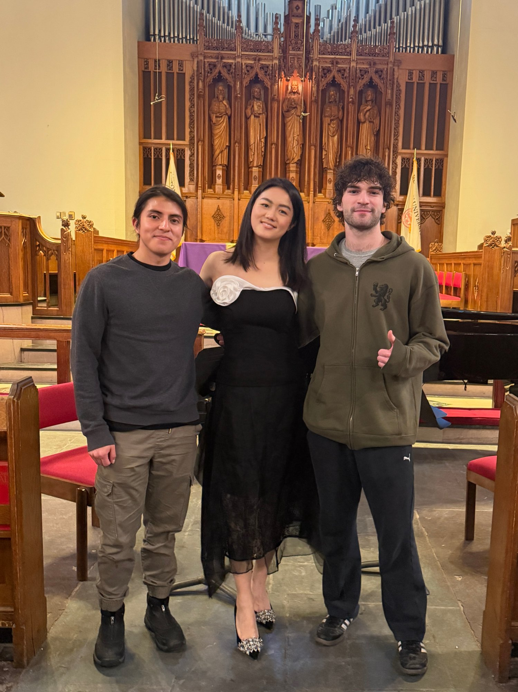

Current Position
Instructor of Group Piano, Boston University
Teaching both music majors and non-music majors
Spring 2026 Courses
- MP111 B4
- MP112 A1
- MP112 A5
Philosophy
Teaching Philosophy
As a teacher, my primary goal is to introduce a wide variety of music styles to students. I believe that exploring diverse musical genres — whether classical, impressionism, jazz, minimalism or folk music — helps students develop a deeper appreciation for music and a broader set of skills. Equally important is helping students build the confidence to play the music they love. It's essential for students to feel that they have the freedom and ability to express themselves through the pieces they are passionate about. By combining musical exploration with personal enjoyment, I hope to help students develop a lifelong love for playing music and to gain spiritual strength and fulfillment through their playing.
I believe the relationship between student and teacher should be collaborative and respectful, with both parties contributing to the learning process. A teacher should not just be an authority figure, but a guide of students' music path. This involves creating an environment where students feel supported in taking risks, trying new things, and gradually overcoming any technical or expressive obstacles they encounter along the way.
Every student has different personalities and learning paces, and it's the teacher's responsibility to recognize these individual differences and create a personalized plan to help each student reach their musical goals. For example, extroverted students may thrive with interactive methods, such as playing rhythmic games with teachers or group playing activities. On the other hand, introverted students may benefit from more reflective approaches, such as writing exercises or individual practice tasks, which allow them to process and internalize concepts at their own pace. By respecting and understanding the individuality of each student, I can help them reach their full potential while making the learning process enjoyable and empowering.
Practice and progress are deeply intertwined, and I believe that a student's success depends not just on the amount of time they put into practice, but also on the quality of that practice. Before letting students dive into the new piece by themselves, I would make my students have a "blueprint" of the piece — an imagination of how it should sound. This means after making sure that students know the key and time signature, I would play the new piece once for students, which ensures they feel the pulse, dynamics, articulations and nuances of the piece. Once students have a sense of the musical direction of the piece, I then focus on breaking it down into manageable sections, helping students understand its structure, and make their independent practice plans. From my experience, this approach makes students' at-home practice much more efficient and they feel more motivated to practice.
Another key to effective practice is listening. Often, students focus solely on the technical aspects — such as finger or arm movement — without paying enough attention to the sound they are producing, which leads to an unrefined performance that misses the musicality of the piece. To avoid this situation, I emphasize the importance of self-reflection through listening. One of the most valuable tools I recommend is recording their practice. This allows students to hear what they are actually playing, rather than relying on their immediate perception, which may not always be accurate. Listening to their recording can highlight areas that need attention — whether it's issues with wrong notes, dynamics, or phrasing — and allow the student to make adjustments accordingly.
Inquire About Lessons
Serving as an Assistant Teacher at the Shanghai FYM Festival.

With students after Concert in BU Marsh Chapel.